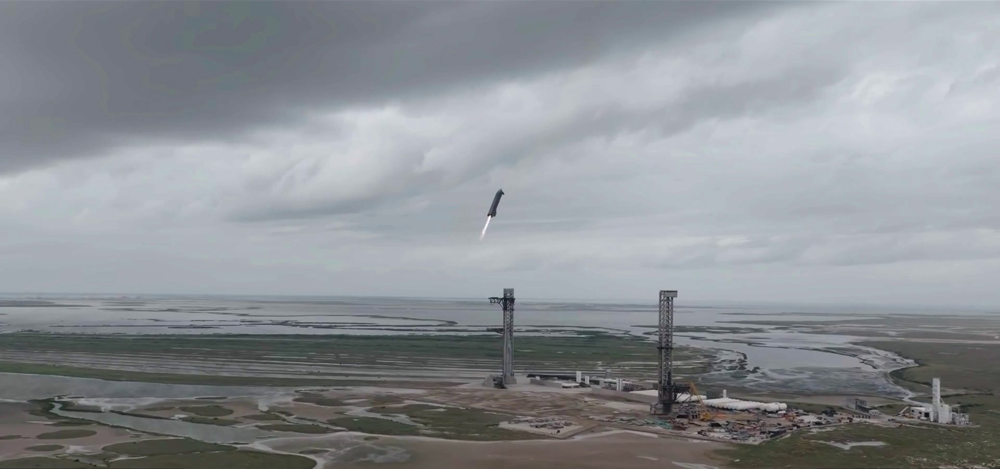
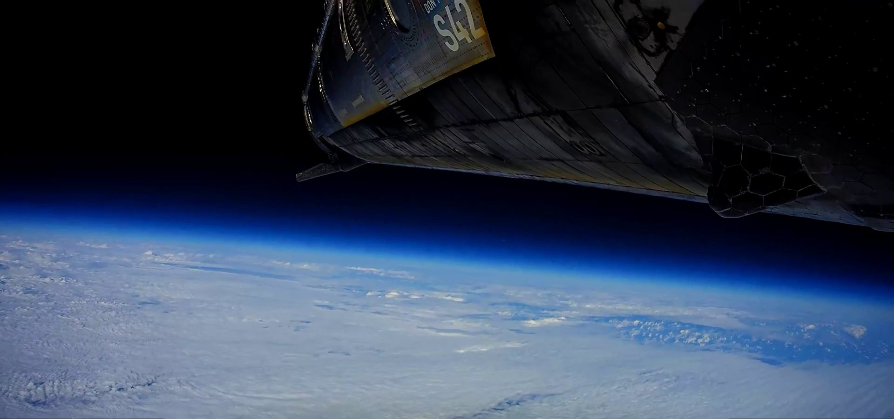
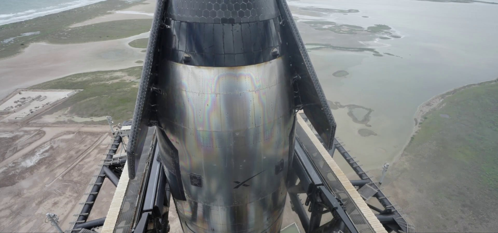
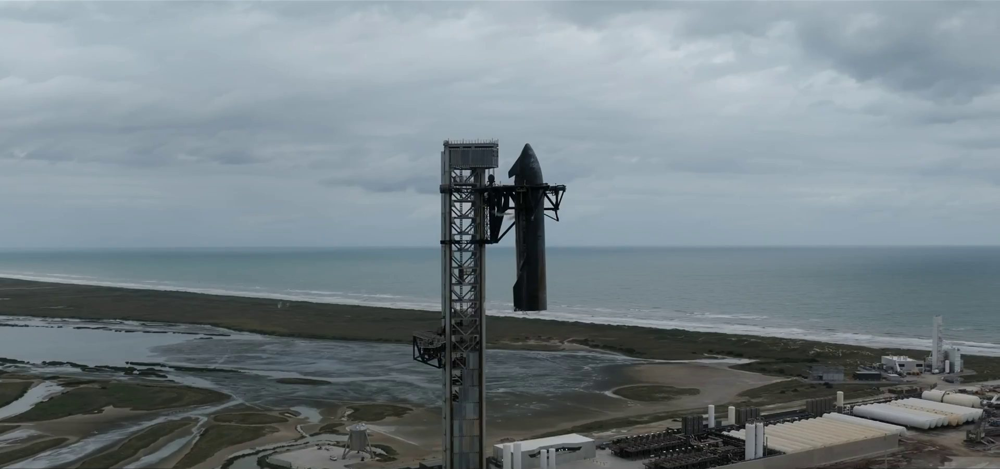

Ce l’hanno fatta. Sabato 14 novembre 2026, alle 22:20 ora italiana (le 15:20 in Texas), Ship 42 è scesa dal cielo nuvoloso di Starbase, si è raddrizzata, ha acceso i motori e si è infilata tra i due bracci della torre, che l’hanno trattenuta a mezz’aria. Poco dopo SpaceX ha scritto: «Mechazilla catches Starship! Congratulations to the entire SpaceX team on this incredible achievement!». La nave era partita meno di un giorno prima dallo stesso sito, venerdì sera alle 23:47 italiane. Per la prima volta lo stadio superiore del razzo più grande mai costruito torna a casa dall’orbita in un solo pezzo.
Gli ultimi minuti
La sequenza finale è durata pochi minuti ma è stata preparata per tutto il giorno. Alle 21:25 italiane SpaceX ha annunciato l’accensione di deorbit riuscita: «Good deorbit burn. Starship is on course to reenter Earth’s atmosphere ahead of a planned catch at Starbase in ~1 hour». Poco prima delle 22 la nave è entrata nell’atmosfera, con la consueta nube di plasma attorno allo scudo termico e le telecamere di bordo collegate via Starlink che trasmettevano senza interruzioni. Alle 22:18 l’ultimo messaggio prima del momento decisivo: «Starship is executing a banking maneuver and final approach as it returns to Starbase for a catch».
Dalle immagini della diretta si vede la nave sbucare dalle nuvole ancora inclinata, quasi di piatto, nella posizione con cui frena nell’aria come un paracadutista. Sopra Starbase, con le due torri ben visibili sotto di lei, Ship 42 ha acceso i Raptor e ha ruotato in verticale. Da lì è scesa lentamente lungo la torre, con il getto dei motori che illuminava la struttura, fino a fermarsi tra i bracci, che l’hanno agganciata e trattenuta. Il cronometro della diretta segnava circa 22 ore e 32 minuti dal decollo. «Can you believe it?», ha gridato in diretta Dan Huot, commentatore di SpaceX, mentre la folla radunata per assistere al rientro esultava.

Una giornata in orbita, poi il via libera
Il catch è arrivato al termine di una giornata che SpaceX ha gestito con prudenza. La nave era in orbita da poco dopo la mezzanotte italiana, dopo aver rilasciato tutti i 26 satelliti Starlink V3 del carico. Nel pomeriggio è arrivato l’aggiornamento più atteso: «Flight 15 Update: Starship coasting in orbit, still looking good for return to launch site today. Pad and tower systems are go for catch». Nave in salute, torre pronta.
Alle 20:18 italiane le squadre hanno dato il via definitivo: «Teams have polled go to return Starship to the launch site at Starbase». È il passaggio chiave del piano: fino a quel momento SpaceX poteva ancora scegliere un rientro in mare, al largo delle Hawaii o del Cile, se qualche parametro non fosse stato perfetto. Elon Musk ha seguito la vigilia in diretta su X: «All systems green for the deorbit burn of Starship», e poi, poco prima dell’accensione, «Starship deorbit burn in 30 seconds».
Durante l’orbita la nave ha fatto circa 14 giri della Terra, uno ogni novanta minuti circa, a una quota di poco meno di trecento chilometri. Il volo precedente, Flight 14 di fine settembre, era durato poco più di tre ore. Questo ne è durato più di ventidue, con le immagini in diretta della Terra vista dalla nave trasmesse grazie alla rete Starlink.

Perché è una svolta
Fino a stasera tutte le Starship tornate dallo spazio erano finite nell’oceano, come previsto dai piani di volo: SpaceX verificava il rientro, la tenuta delle piastrelle e la manovra finale di raddrizzamento sopra il mare, e la nave andava persa. Il booster Super Heavy era già stato ripreso dalla torre tre volte, nei voli 5, 7 e 8, ma la Ship è un’altra cosa. Rientra da velocità orbitale, circa 27 mila chilometri all’ora, attraversa il calore del rientro con lo scudo termico e deve arrivare sopra la torre con una precisione di pochi metri.
Riprenderla intera è il pezzo che mancava al progetto di un razzo completamente riutilizzabile, l’idea su cui SpaceX ha costruito tutto Starship: un veicolo che decolla, torna, viene controllato, rifornito e riparte, come un aereo. Ogni nave recuperata vuol dire meno costi e lanci più frequenti. SpaceX ha presentato il catch proprio così: la dimostrazione che anche lo stadio superiore può tornare alla base.
Non per caso il catch arriva su un volo che portava 26 Starlink V3, i satelliti di nuova generazione che possono volare solo su Starship. Una nave che si recupera e riparte a breve rende economico mettere in orbita grandi quantità di questi satelliti. Ed è lo stesso schema che servirà al programma lunare: la versione HLS di Starship scelta dalla NASA per Artemis dovrà essere rifornita in orbita da molte navi cisterna, che dovranno partire e tornare a ritmo serrato.

Il conto di Flight 15
Il bilancio del volo è quasi completo. Il decollo di venerdì sera, la separazione a caldo, l’ingresso in orbita, il rilascio dei 26 Starlink V3, la lunga crociera e ora il rientro con catch: tutti obiettivi raggiunti dalla nave. Manca solo il booster. Booster 22, il primo Super Heavy della generazione V3 a tentare il ritorno alla torre, aveva interrotto da solo l’avvicinamento alla rampa pochi minuti dopo il decollo e si era diretto nel Golfo del Messico, dove è esploso poco prima di toccare l’acqua.
Kate Tice, ingegnera di SpaceX e voce delle sue dirette, ha spiegato che i motori del booster si sono spenti troppo presto durante la frenata di ritorno. Il sistema di guida ha capito che lo stadio non era nella posizione giusta e ha avviato in automatico la deviazione in mare. Le cause sono ancora in analisi. Elon Musk ha difeso la scelta: rispondendo al divulgatore Scott Manley, che scriveva di essere contento di avere una torre pronta per la Ship, ha confermato che il prossimo booster è quasi pronto al volo, ma che perdere la torre o il supporto di lancio avrebbe potuto costare due o tre mesi. In altre parole: meglio perdere un booster in mare che una torre a terra. Ed è proprio quella torre, rimasta intatta, ad aver preso la Ship stasera.
SpaceX ha fatto sapere anche che le squadre di recupero sono intervenute subito nell’area dello splashdown e che il team ambientale raccoglie i detriti eventualmente arrivati a riva. Il lancio aveva avuto anche qualche ricaduta sul traffico aereo: le autorità delle Hawaii avevano sospeso in via temporanea alcuni voli verso la costa occidentale per il rischio di detriti. Lo stop nazionale dei voli deciso venerdì dalla FAA era invece dovuto a un guasto delle telecomunicazioni, non al lancio. Entrambi i provvedimenti sono già stati revocati.

«Don’t Panic»
Sul fianco di Ship 42 era dipinta la scritta «Don’t Panic», omaggio alla Guida galattica per autostoppisti di Douglas Adams, il libro in cui il 42 è la risposta alla domanda fondamentale sulla vita, l’universo e tutto quanto. Stamattina ci chiedevamo se quel numero avrebbe portato fortuna. La risposta è arrivata alle 22:20.
E adesso
Ora comincia il lavoro meno spettacolare ma decisivo. La nave dovrà essere calata dalla torre e ispezionata: lo stato dello scudo termico dopo un rientro reale dall’orbita, l’usura dei motori e delle alette diranno quanto lavoro serve per farla ripartire. È questa la vera misura del successo: non solo riprenderla, ma rimetterla in volo senza ricostruirla. Sul fronte del booster, SpaceX dovrà chiudere l’indagine sullo spegnimento anticipato dei motori di Booster 22 prima del prossimo tentativo di doppio catch.
Per stasera, però, il risultato è netto. Dopo i catch del Super Heavy, Starbase ha ripreso anche la nave che era stata nello spazio. Il razzo completamente riutilizzabile non è più solo un progetto su carta.
Il decollo, il problema del booster e la giornata in orbita sono raccontati nel dossier su Flight 15 in orbita, che passa all’archivio Notizie; la vigilia nel dossier su Booster 22 e Ship 42 sulla rampa, il volo precedente nel resoconto di Flight 14.
Fonti pubbliche e tracce
Ultimo aggiornamento editoriale: 14 novembre 2026 alle 22:55 (ora italiana). Nel corpo non si ripete la fonte a ogni frase: le tracce sono raccolte qui. Orari espressi in ora italiana; l’orario del catch è ricavato dal cronometro della diretta SpaceX (T+22:32 circa dal decollo delle 23:47:36 del 13 novembre) ed è coerente con il post di conferma delle 22:21.
- SpaceX su X, 14 novembre 2026, 22:21: «Mechazilla catches Starship!», con il video completo del catch.
- SpaceX su X, 14 novembre 2026: nave in salute e torre «go for catch» (status 2121629656868614213, 16:41), via libera al ritorno a Starbase (status 2121684113526858011, 20:18), accensione di deorbit riuscita (status 2121701161040556374, 21:25), rientro nell’atmosfera (status 2121709368945385477, 21:58), manovra di avvicinamento finale (status 2121714305968304321, 22:18), recupero dei detriti del booster (status 2121629958036492590).
- Elon Musk su X, 14 novembre 2026: «All systems green for the deorbit burn of Starship»; «Starship deorbit burn in 30 seconds» (status 2121700409173487768); prossimo booster quasi pronto e rischio di due o tre mesi persi con un danno alla torre, in risposta a Scott Manley (status 2121666778308678025).
- Associated Press via NPR, 14 novembre 2026: catch dopo circa 22 ore, 14 orbite a circa 265 km, frase di Dan Huot in diretta, spiegazione di Kate Tice sullo spegnimento anticipato dei motori del booster.
- CNBC, 14 novembre 2026: primo catch dello stadio superiore dall’orbita, sospensione temporanea di alcuni voli alle Hawaii e stop FAA per guasto alle telecomunicazioni, entrambi revocati.
- The Verge, 14 novembre 2026: sequenza del catch, discesa tra le nuvole, raddrizzamento e ingresso tra i bracci.
- Launch Library 2: Starlink Group 31-2 (Starship Flight 15), T-0 22:47:36 UTC, esito «Launch Successful».
Fotografie utilizzabili
A mezz’ora dal catch non esistono foto a licenza libera dell’evento su Wikimedia Commons o nei canali NASA. Tutte e cinque le immagini sono quindi fotogrammi dei video ufficiali pubblicati da SpaceX sul suo account X il 14 novembre (catch e avvicinamento finale), ritagliati per togliere la grafica della diretta e usati con credito SpaceX e dicitura «uso editoriale non commerciale». Dettagli in scheda dei crediti fotografici.
Apri il dossier su Flight 15 in orbita, archiviato · Archivio Notizie · Torna a SpaceX